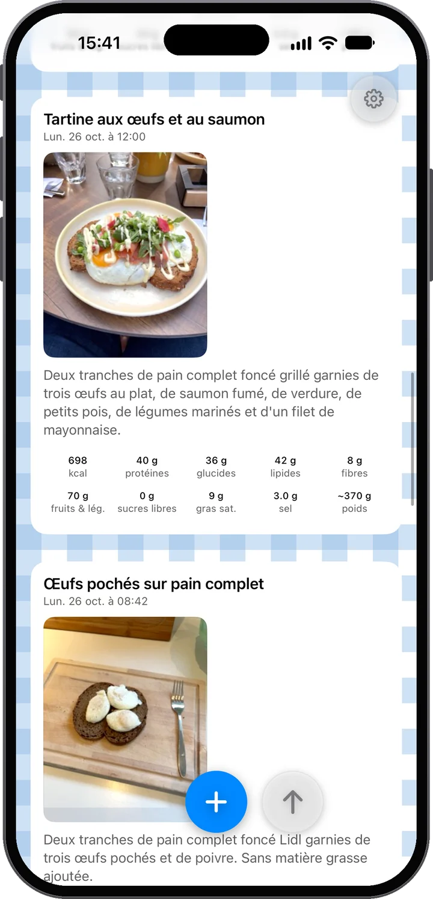
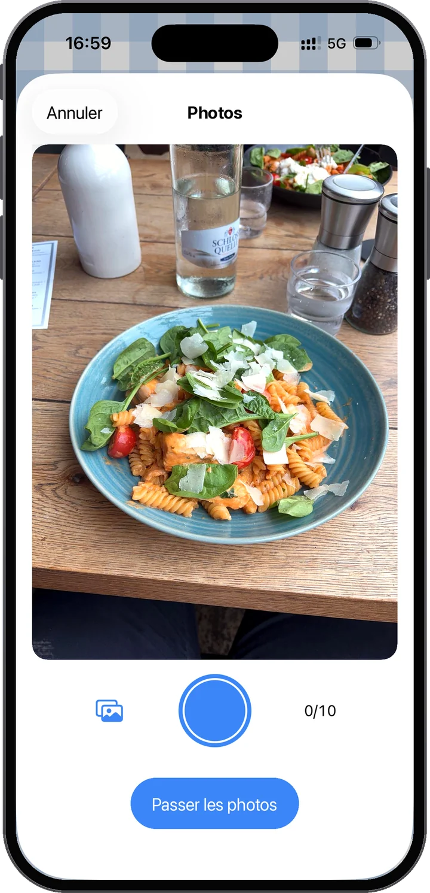
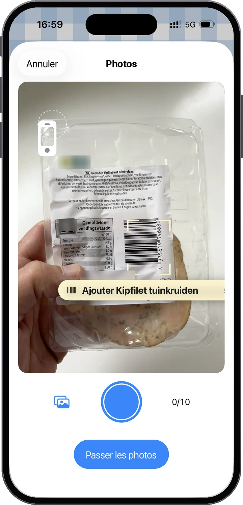
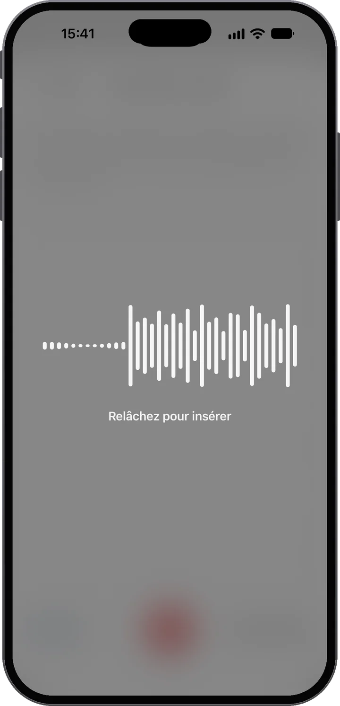
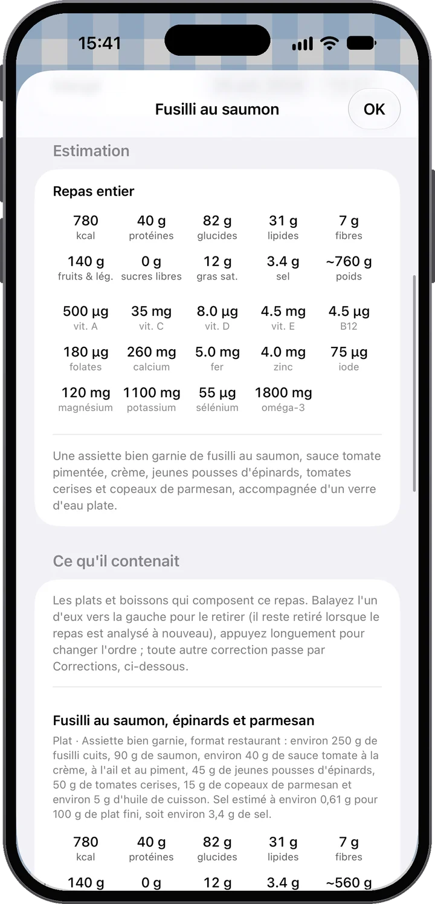
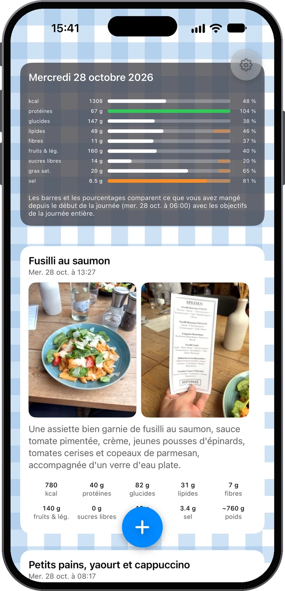
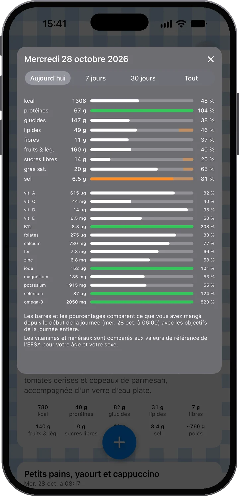

Voyez-la. Comprenez-la.
Photographiez votre repas et Food Moments en fait un fil de votre journée : les photos d’abord, juste en dessous ce qu’il y a vraiment dedans. Dites ce que la photo ne montre pas — et voyez où en est votre journée avant le prochain repas.

Presque aucun effort — beaucoup de compréhension à la clé.
Photographiez votre repas — une photo ou plusieurs. Puis ajoutez du contexte : tapez une note, ou maintenez simplement le micro et parlez. « Deux œufs au plat et le petit pain », c'est tout ce qu'il faut.
Le repas est analysé pour vous : énergie, protéines, glucides, lipides, fibres, fruits et légumes, sucres libres et sel, plat par plat, et elle dit franchement à quel point elle est sûre — et voyez comment il s'inscrit dans votre journée.
Au fil de la journée, votre fil se remplit et les barres avancent. Vous voyez comment votre journée alimentaire évolue et où vous en êtes — avant de choisir le prochain repas, pas après.
Vous avez été raisonnable toute la journée ? Vos barres le montrent. Alors prenez le dessert — et savourez-le sans arrière-pensée : vous êtes toujours dans l'objectif, et ce sont vos propres données qui le disent, pas une intuition.

Les photos d'abord
La photo est la source première. L'analyse lit les plats, les portions — même une étiquette nutritionnelle ou un code-barres s'il apparaît sur l'image. Et il ne faut pas s'arrêter à une photo : un repas peut en contenir jusqu'à dix. Vous cuisinez ce soir ? Photographiez les ingrédients au fil de la préparation, puis l'assiette finale — l'analyse assemble le tout.

Ou scannez le code-barres
Visez un code-barres et Food Moments trouve le produit avec son tableau nutritionnel, sans photo. Scannez plusieurs produits et ils forment un repas ; ajoutez une photo de ce que vous avez cuisiné et l’analyse reprend les valeurs exactes de l’étiquette. Données produit d’Open Food Facts.

Puis vos mots — à votre façon
Souvent, les photos suffisent. Quand ce n'est pas le cas — ce qu'il y avait dans le smoothie, la part de la poêle que vous avez vraiment mangée — ajoutez du contexte avec vos propres mots. Vous préférez taper ? Tapez. Mais essayez le micro : la dictée s'appuie sur les derniers modèles vocaux, place vos mots dans la note un instant après que vous avez relâché le bouton et tient bon même dans une rue bruyante. Dans tous les cas, vos mots l'emportent toujours sur la photo — l'app vous écoute, vous.
Salade de poulet, une tranche de pain au levain beurrée et un demi-verre de jus d'orange.
Les plats et boissons qui composent le repas. Balayez pour en retirer un, maintenez pour réordonner — toute autre correction passe par Feedback.
La nourriture était claire ; la quantité a dû être estimée d’après les photos. Prenez ces chiffres comme approchés plutôt qu’exacts — indiquer la quantité les affine.
La nutrition au-delà des calories
Chaque Food Moment est détaillé comme le ferait un menu — chaque plat et boisson avec sa portion et ses chiffres, additionnés en totaux : énergie, protéines, glucides, lipides, fibres, fruits et légumes, sucres libres, sel et un poids estimé. Et l'app vous dit honnêtement à quel point elle est sûre — pour que vous sachiez quand une courte note dictée affinerait l'estimation.

Votre fil personnel
Vos repas, boissons et en-cas apparaissent au fil de la journée — photos d'abord, comme un fil personnel vu à travers la nutrition. En haut, la carte du jour tient le score : chaque barre compare ce que vous avez mangé jusque-là aux objectifs de la journée entière. Une barre basse le matin n'est pas un échec — c'est de la marge. Chaque objectif cite sa source publique : d'où vient chacun.
Un geste plus loin
Touchez la carte du jour pour voir quatorze vitamines et minéraux, comparés aux valeurs de référence européennes pour votre âge et votre sexe. Passez à 7 jours, 30 jours ou depuis le début et voyez vos semaines s’additionner. Lesquels, et pourquoi.


Prenez le dessert. Savourez la pizza. L'essentiel est de savoir ce que cela représente dans le contexte du reste de votre journée — puis de prendre la décision suivante avec de meilleures informations.
Ce que nous défendons
Bien manger donne de l'énergie, soutient la santé et rend le quotidien meilleur. En même temps, personne ne mange parfaitement tout le temps — et Food Moments normalise cela. C'est une app pour les gens qui prennent soin d'eux, pas une app qui punit de manger.
Conçu pour la confidentialité
Un compte qui n'est que votre adresse e-mail — pas de nom, pas de mot de passe. Vos repas sont stockés dans l'UE, à télécharger ou supprimer quand vous voulez.
Votre compte n'est que votre adresse e-mail. Pas de mot de passe, pas de nom — un code à usage unique vous connecte, et vos repas, photos et historique vivent dans votre compte sur des serveurs dans l'Union européenne ; un nouvel iPhone retrouve ainsi tout. Les photos et les notes sont envoyées à l'IA pour l'analyse nutritionnelle que vous demandez — avec votre consentement, et jamais pour constituer un profil ; nous ne regardons nous-mêmes vos repas que si vous activez Aidez à améliorer Food Moments. La dictée reste elle aussi dans l'UE : elle a son propre consentement, demandé une fois, et son service vocal s'exécute dans l'UE comme l'analyse — rien de ce que l'app envoie ne quitte l'Union européenne. Téléchargez tout ou supprimez votre compte quand vous voulez, directement dans les Réglages. Les détails figurent dans la politique de confidentialité, en langage clair.

Les 14 premiers jours sont gratuits. Résiliez avant la fin dans votre compte Apple et vous ne payez rien.